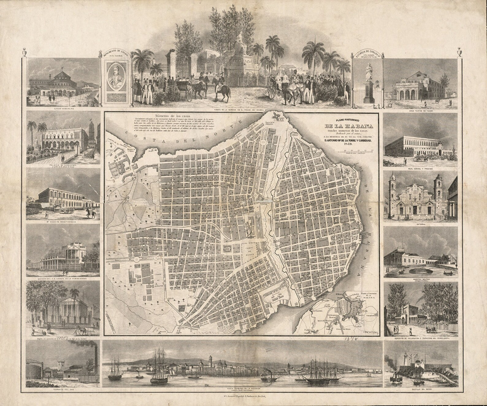
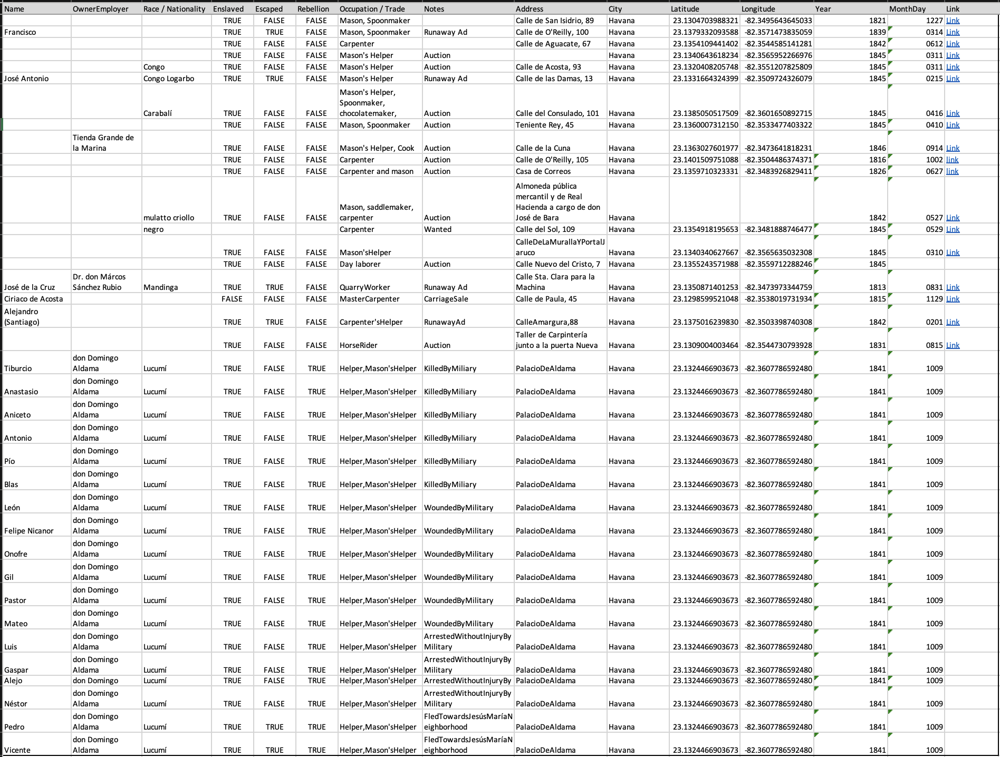
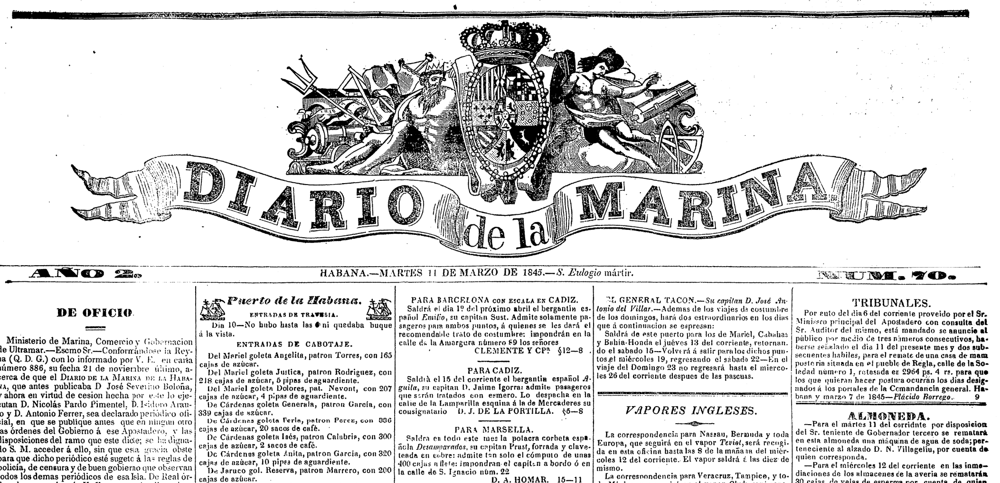
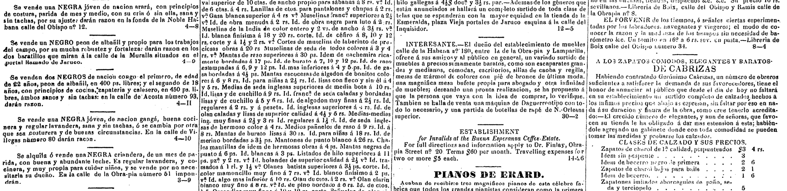

A late-ninteenth-century photograph of the Palacio de Aldama. Notice the street car tracks and overhead wires in the foreground.
On October 9, 1841, a group of at least fifty enslaved Africans was at work at a construction site when they staged a rebellion. Likely, they were working as masons, day laborers, carpenters, and in other building trades, but their status as enslaved artisans working the very center of the colonial capital challenges the predominant historical narrative that emphasizes slavery primarily as a rural phenomenon tied to the plantation. In fact, their uprising might be viewed as part of the larger Escalera Rebellion (1841-44) in which enslaved Africans and freed people of color (and some white allies) attempted to abolish slavery on the island. This project argues that the labor of constructing the built environment is crucial for understanding industrialization and the struggles for liberation that characterize the nineteenth century in Cuba. Focusing on Havana, the project aims to use several key works of architecture to illustrate the way urbanization and construction were important for these inextricably linked processes.
On that day they were working on the Palacio de Aldama, one of Havana’s most iconic buildings. Commissioned by the Basque entrepreneur and plantation owner, don Domingo de Aldama, it was designed by the Dominican-born architect Manuel José Carreras y Heredia, who was also hired to design some of Cuba’s first railroads linking the rural sugar plantations to Havana’s ports in the 1840s. The prominent neoclassical building in central Havana was indicative of the scale of urban transformation and construction in min-nineteenth-century Havana. In fact, this building site was a site of resistance. This research project argues that to understand the way Cuba industrialized and urbanized, we must understand the composition of its labor force. This is especially true in the nineteenth century when social classes, races, professions, and occupational categories began to crystallize alongside the protracted liberation struggles for freedom from slavery and imperial rule. Using the designs of Carrera y Heredia and the supervising architect-engineer, Julio Sagebien—both of whom were intensely involved in urban construction and the construction of railroads linking the city to plantations, the project constructs a general view of construction labor during the period, while using specific projects linked to don Domingo de Aldama and his architects as illustrations of the system of labor mixing wage work by professionals, and forced and wage work by trades people.
A 1839 map of Havana showing the historic walled city on the right and the gridded "ensanche" outside the walls on the left.
Indeed, in the nineteenth century, Cuba’s centuries-old city walls began to come down to make way for a more modern, interconnected city, which had already outgrown its historic core. Different zones of the city, inside the walls and outside the walls, had for decades connoted status and race. This project uses data on population, occupation, and demographics to visualize and map the location of individuals working in the building trades—free and enslaved—throughout the city. In addition, it uses key examples like the Palacio de Aldama, the new railroad stations, and the very streets and railroad tracks to illustrate the mixture of labor practices that were necessary for urbanization to occur.
This project uses three datasets to visualize building labor in nineteenth-century Havana. The first draws on a census produced during the US-led occupation after the 1898 Spanish-American War to show the growth of the country from 1775 to 1908. The second uses census information from 1863 to describe the population of each of the six districts of the capital. Within each district the dataset contains population information by race and class, including residents’ status as free, enslaved, or emancipated. In addition, this second set describes the population in each district by occupation providing the numbers of masons, carpenters, and architects, among many other trades. Finally, the third dataset is drawn from nineteenth-century Cuban newspapers in which advertisements for the sale of enslaved individuals, runaways, and other notices mention the name, owner or employer, trade, and location of individuals between the 1810s and 1860s, with most appearing in the 1840s. Thus, the three sets together describe the overall composition of the city, in a national context, while locating in urban space some of the individual laborers who were responsible for the construction and maintenance of the city.
Datapoints showing known locations of enslaved and freed people of color working in the building trades in colonial Havana from 1821 to 1841.
Most of the first datapoints were found in advertisements listed in local newspapers from the time, such as the Diario de la Marina.
Advertisements, such as these on the fourth page of this issue list more than one enslaved "NEGRO" with skills as a mason.
Other demographic data was taken from a statistical dictionary published in the early 1860s.
Primary Sources
Carrera y Heredia, Manuel José de. Informe jeneral presentado á la Junta Directiva del Ferro-carril de la Sabanilla: con el proyecto de prolongacion de su camino hasta Navajas, y el plan de entroncamiento con los ferrocarriles de la Habana y Cárdenas. Matanzas: Impr. de Gobrerno y Real Marina, 1846.
Pezuela, Jacobo de la. Diccionario geografico, estadístico, historico, de la isla de Cuba. First. Vol. 3. Impr. del estab. de Mellado, 1863.
Saco, José Antonio. Memoria sobre la vagancia en Cuba: fragmentos.Diferencias (Linkgua Ediciones). Barcelona: www.Linkgua.com, 2019.
Saco, José Antonio. Obras de don José Antonio Saco. Libreria americana y estrangera de R. Lockwood é hijo, 1853.
Valdés, Gerónimo. “Expediente reservado sobre un motín de negros en la propiedad de Domingo Aldama,” 1842 1841. ULTRAMAR, 8, Exp.10. Archivo Histórico Nacional. http://pares.mcu.es/ParesBusquedas20/catalogo/description/1333031.
Various Articles and Advertisements sourced from: “Caribbean Newspapers, 1718–1876.” Accessed March 9, 2023. https://infoweb-newsbank-com.ezproxy.princeton.edu/apps/readex/welcome?p=EANACN
Secondary Sources
Clarke, Linda. Building Capitalism: Historical Change and the Labour Process in the Production of Built Environment. Routledge Revivals. Oxon [England]: Routledge, 2011.
Ferrer, Ada. Cuba: An American History. London, England: Scribner, 2021.
Finch, Aisha K. Rethinking Slave Rebellion in Cuba: La Escalera and the Insurgencies of 1841-1844. Envisioning Cuba. Chapel Hill: The University of North Carolina Press, 2015. http://www.jstor.org/stable/10.5149/9781469622354_finch.
Fraginals, Manuel Moreno. El ingenio: el complejo económico social cubano del azúcar. Comisión Nacional Cubana de la UNESCO, 1964.
Llanes, Llilian. Apuntes para una historia sobre los constructores cubanos. Colección Arquitectura cubana. Ciudad de La Habana, Cuba: Editorial Letras Cubanas, 1985.
Lowe, Lisa. The Intimacies of Four Continents. Durham: Duke University Press, 2015. https://www.jstor.org/stable/10.2307/j.ctv11cw8zh.
Robinson, Cedric J. Black Marxism: The Making of the Black Radical Tradition. Third World Studies. London: Zed Press, 1983.
Venegas Fornias, Carlos. La urbanización de las murallas: dependencia y modernidad. La Habana, Cuba: Ed. Letras Cubanas, 1990.
Weiss, Joaquín E. La arquitectura colonial cubana: siglos XVI al XIX. Sevilla: Consejería de Obras Públicas y Transportes, 1996.
Zeuske, Michael. “Out of the Americas: Slave Traders and the Hidden Atlantic in the Nineteenth Century.” Atlantic Studies 15, no. 1 (January 2, 2018): 103–35. https://doi.org/10.1080/14788810.2017.1411705.